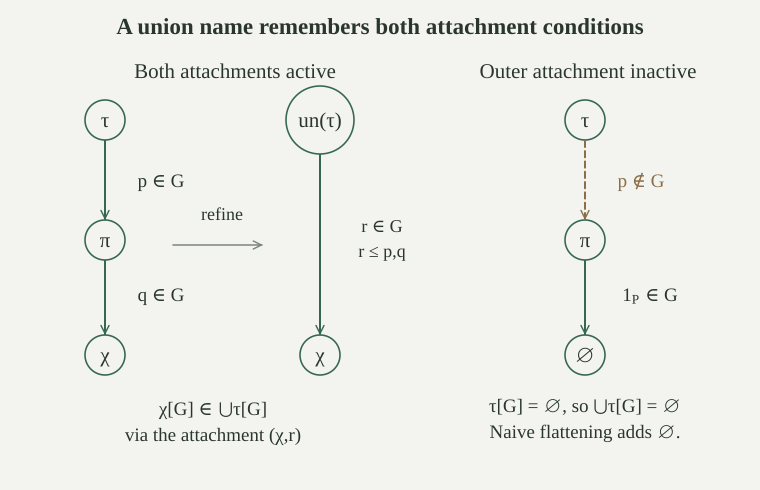

Fix a forcing order \((P,\le,1_P)\). Define the hierarchy of \(P\)-names by ordinal recursion:
A \(P\)-name is a set belonging to some \(N_\alpha\). Thus each of its members is an ordered pair \((\sigma,p)\), where \(\sigma\) is another name and \(p\in P\). The domain of a name is \(\operatorname{dom}(\tau)=\{\sigma:\exists p\in P,\ (\sigma,p)\in\tau\}\). Use ordinary set-coded ordered pairs throughout.
The name rank is the ordinal defined recursively by
The empty supremum is zero. This is the rank in the name tree, not necessarily the ordinary membership rank of its pair-coded set.
The name hierarchy consists of sets, is increasing, and satisfies \(N_\alpha=\{\tau:\tau\text{ is a name and }\rho(\tau)<\alpha\}\). In particular, \(\rho(\tau)\) is the least \(\alpha\) for which \(\tau\in N_{\alpha+1}\), and every \(\sigma\in\operatorname{dom}(\tau)\) has \(\rho(\sigma)<\rho(\tau)\).
Power Set gives each successor stage; Replacement and Union give each limit stage. Ordinal induction shows monotonicity. At a successor stage, \(\tau\in N_{\alpha+1}\) exactly when every attached child \(\sigma\) lies in \(N_\alpha\). By induction this says that all child ranks are below \(\alpha\), equivalently that \(\sup(\rho(\sigma)+1)\le\alpha\). At a limit stage, being below the limit is equivalent to being below some smaller stage; a name of rank \(\beta<\lambda\) already lies in \(N_{\beta+1}\), with \(\beta+1<\lambda\).
The recursion is legitimate: a child \(\sigma\) occurs inside an ordered pair belonging to \(\tau\), so its ordinary membership rank is strictly below that of \(\tau\). The resulting child relation is well founded by its decreasing ordinal height. Well-founded set-valued recursion on the set of iterated children defines the displayed ordinal values uniquely. The successor and limit calculations identify them with the least hierarchy stages, and the rank equation gives strict decrease to every child.
For any filter \(G\subseteq P\), the value of a name is given by well-founded recursion:
The recursion is unique because each child has smaller name rank. For one name, all iterated children form a set, and Replacement collects their already defined values at each recursive step. Thus this definition yields a set \(\tau[G]\), not just a class prescription. The value can depend on \(G\); genericity is not needed to define it.
If \(A\subseteq B\) are transitive ZF-models containing \(P\), then for each \(\tau\in A\) they agree on whether \(\tau\) is a \(P\)-name, and on its name rank when it is. If also \(G\in A\), they agree on \(\tau[G]\). The same conclusions compare a transitive set model with the ambient universe satisfying ZF.
Every ordered pair occurring in \(\tau\), and every child it codes, belongs to both transitive domains. Pair decoding and the supplied membership tests are bounded and absolute. Induct on the well-founded child relation, or on ordinary membership rank. A proposed name is valid precisely when all its members have the required pair form with a condition in the same \(P\), and every child is a valid name. The induction equivalences therefore give agreement on namehood.
For rank, both models form the same set of child-rank successors, by induction, and take its union as ordinal supremum. For evaluation, they select the same attached conditions in \(G\); the child values agree by induction, so Replacement produces exactly the same set of values. Uniqueness of these recursions proves agreement.
This argument transfers a recursion with its required parameters present. It does not claim that power sets, whole hierarchy stages, or arbitrary recursive definitions are bounded formulas. In particular, evaluation cannot be carried out inside a ground model missing \(G\).
Let \(M\) be a transitive set model of ZFC, let \(P,\le,1_P\in M\) form a forcing order, and let \(G\subseteq P\) be any filter. The extension by name values is
This is a set: Separation selects the names in the set \(M\), and Replacement under the evaluation rule collects their values. The preceding absoluteness result identifies these names with the names recognized internally by \(M\). The model \(M\) need not be externally countable for this definition; countability enters when constructing generic filters.
For an \(M\)-generic filter, the forcing theorem connects truth of each fixed ordinary formula in this set-domain structure with a condition in the filter.
For each set \(x\), its check name is \(\check x=\{(\check y,1_P):y\in x\}\). This recursion defines a \(P\)-name, and \(\check x[G]=x\) for every filter \(G\). If \(x\in M\), then \(\check x\in M\). Consequently \(M\subseteq M[G]\).
Use membership induction. The recursively obtained child names form a set by Replacement, so the displayed collection is a name. Since \(1_P\in G\), evaluation gives \(\check x[G]=\{\check y[G]:y\in x\}\). Induction identifies this with \(x\). The same definable recursion is available in \(M\), and identifies its output with \(\check x\). Thus \(\check x\) is a ground-model name for every \(x\in M\), proving the inclusion.
The canonical filter name is \(\dot G=\{(\check p,p):p\in P\}\). It belongs to \(M\), and \(\dot G[G]=G\). Hence \(G\in M[G]\).
For every filter \(G\), the set \(M[G]\) is transitive. If \(M\) is externally countable, then \(M[G]\) is externally countable.
If \(y\in x=\tau[G]\) with \(\tau\in M\), then \(y=\sigma[G]\) for some attached pair \((\sigma,p)\in\tau\) with \(p\in G\). Transitivity of \(M\), applied through the set-coded pair, gives \(\sigma\in M\). Therefore \(y\in M[G]\).
The ground-model names form a subset of \(M\), and evaluation maps that set onto \(M[G]\). The image of a countable set is countable, so the external countability assertion follows. These facts do not yet assert that every ZFC axiom holds in \(M[G]\).
For names \(\sigma,\tau\), define the pair name \(\operatorname{pair}(\sigma,\tau)=\{(\sigma,1_P),(\tau,1_P)\}\). Its value is exactly \(\{\sigma[G],\tau[G]\}\), since both attachments are active. Define the ordered-pair name by the Kuratowski construction
Applying the pair evaluation twice gives \(\operatorname{op}(\sigma,\tau)[G]=(\sigma[G],\tau[G])\). If the input names lie in \(M\), these finite set constructions lie in \(M\) as well.
For a name \(\tau\), define its union name by
It is a name and satisfies \(\operatorname{un}(\tau)[G]=\bigcup\tau[G]\) for every filter \(G\). If \(\tau\in M\), then \(\operatorname{un}(\tau)\in M\).
The possible children \(\chi\) form a set, obtained from the iterated domains of \(\tau\). Separation from its product with \(P\) defines the displayed name. This construction is also available internally in \(M\); its defining tests of supplied conditions and pairs are absolute, so the resulting name is the same.
If \(z=\chi[G]\in\operatorname{un}(\tau)[G]\), choose an active \(r\in G\) and witnesses \((\pi,p)\in\tau\), \((\chi,q)\in\pi\), with \(r\le p,q\). Upward closure puts both \(p,q\) in \(G\). Hence \(z\in\pi[G]\in\tau[G]\), giving \(z\in\bigcup\tau[G]\).
Conversely, if \(z\in y\in\tau[G]\), choose \(y=\pi[G]\) with attachment \(p\in G\), then \(z=\chi[G]\) with attachment \(q\in G\) in \(\pi\). Directedness supplies \(r\in G\) refining both \(p,q\). The pair \((\chi,r)\) belongs to the union name, so \(z\in\operatorname{un}(\tau)[G]\). This proves the exact equality.
Let \(p\notin G\), put \(\pi=\{(\varnothing,1_P)\}\), and put \(\tau=\{(\pi,p)\}\). What happens if a proposed union name keeps every attachment found inside \(\pi\) but ignores the outer condition \(p\)?
The outer attachment is inactive, so \(\tau[G]=\varnothing\) and \(\bigcup\tau[G]=\varnothing\). Naive flattening instead gives the name \(\{(\varnothing,1_P)\}\), whose value is \(\{\varnothing\}\), since \(1_P\in G\). It adds an unwanted member.
The corrected union name permits \((\varnothing,r)\) only when \(r\le p,1_P\). No such \(r\) can belong to \(G\), because upward closure would then put \(p\) in \(G\). Its value is therefore empty, as required. The refinement condition remembers both levels of activation.

For every name \(\tau\) and filter \(G\), \(\operatorname{rank}(\tau[G])\le\rho(\tau)\). Consequently \(M\) and \(M[G]\) have exactly the same ordinals.
Induct on name rank. Every member of \(\tau[G]\) is some active \(\sigma[G]\), whose rank is at most \(\rho(\sigma)\) by induction. The rank equation therefore gives
If \(\beta\) is an ordinal in \(M[G]\), write \(\beta=\tau[G]\) for a name \(\tau\in M\). Its name rank is an ordinal belonging to \(M\), by internal recursion and . Since an ordinal is its own membership rank, \(\beta\le\rho(\tau)\). Equality puts \(\beta\) in \(M\) directly, and strict inequality puts it in \(M\) by transitivity. Conversely \(M\subseteq M[G]\), so every old ordinal is present. Actual ordinalhood is absolute for these transitive domains by the bounded ordinal test.
For any filter \(G\), the actual-membership structure on \(M[G]\) satisfies Extensionality, Foundation, Empty Set, Pairing, Union and Infinity.
It is a nonempty transitive set: it contains \(M\). Distinct members differ on an actual member of one of them, which remains in \(M[G]\) by transitivity; thus Extensionality holds. For any nonempty \(x\in M[G]\), ambient Foundation supplies \(y\in x\) disjoint from \(x\). This \(y\) lies in \(M[G]\), proving the relativized Foundation axiom. The empty set belongs because it belongs to \(M\).
Given two values of ground-model names, their pair name belongs to \(M\) and has their exact pair as value. Likewise supplies the exact union of any member. These prove Pairing and Union internally. Finally \(\omega\in M\subseteq M[G]\), with its actual elements and successor operation, witnesses Infinity.
These proofs use the explicit names or transitivity for each asserted axiom. No assertion about Separation, Replacement, Power Set or Choice in \(M[G]\) follows merely from the closure facts proved here.
For a generic filter, the remaining ZFC axioms follow from forcing-definable names and set-sized bounds.
For the Cohen order, the name
belongs to \(M\) and has value \(\dot g[G]=\bigcup G\). For an \(M\)-generic Cohen filter, this value is a total binary sequence in \(M[G]\setminus M\).
Each check name and ordered-pair name is defined in \(M\). Separation and Replacement over \(P_{\mathrm C}\times\omega\times2\) collect the displayed attachments into a name in \(M\). Evaluating it gives exactly the pairs \((n,i)\) assigned by conditions \(p\in G\). This is the graph union \(\bigcup G\), proving the equality. For a generic filter, totality and disagreement with every old sequence give the final conclusion.
Suppose \(p\in P\setminus G\). Compare the names \(\varnothing\) and \(\tau=\{(\varnothing,p)\}\). Are their values different? What does this say about recovering a name from its value?
Both values are empty: the empty name has no attachments, and the only attachment in \(\tau\) is inactive because \(p\notin G\). The names are distinct sets, however. Evaluation is therefore not injective, and its image description of \(M[G]\) does not select a unique name for an extension object. If \(p\in M\), both names lie in \(M\), so this already happens among ground-model names.